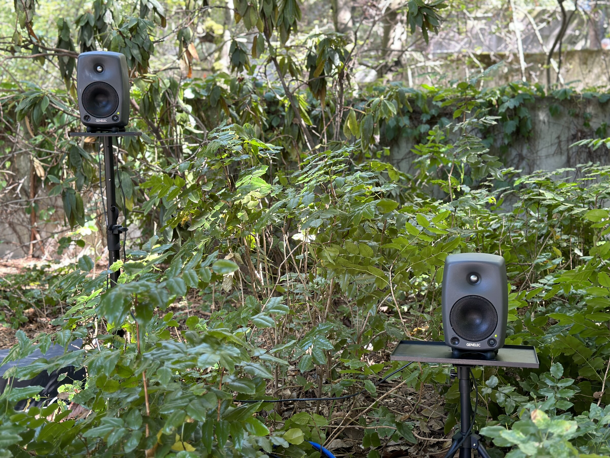
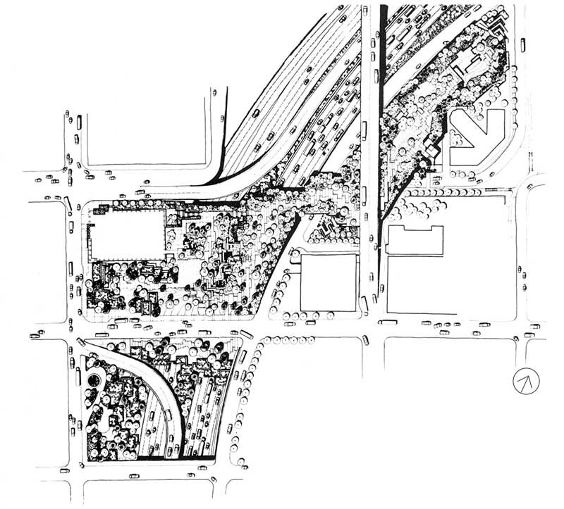
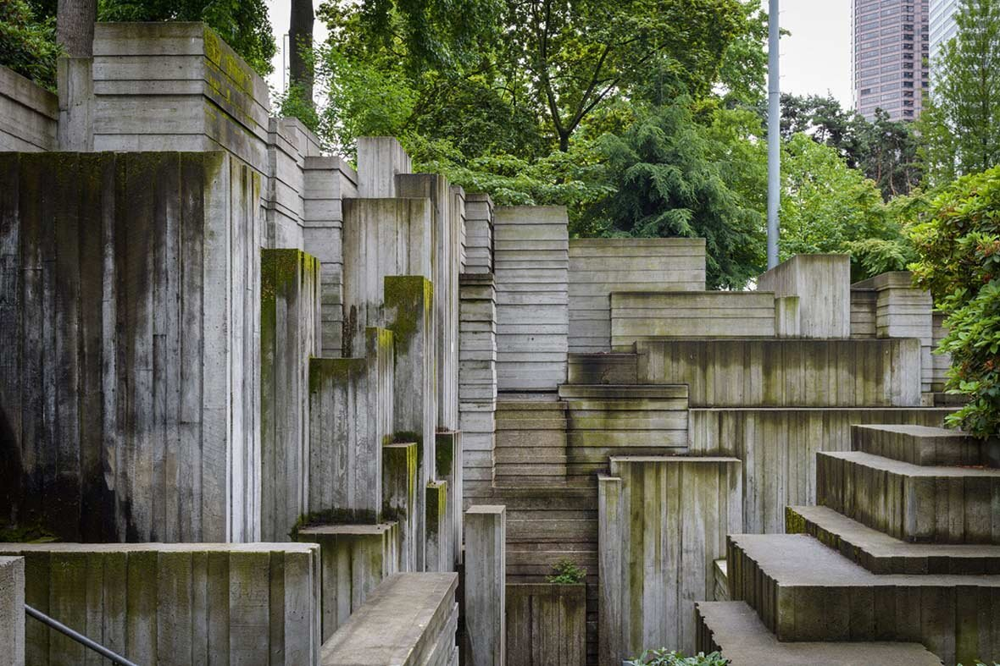

REFLECTIONS
Back
This multi-channel site specific sound installation took place in Freeway Park in downtown Seattle. The park was built over and alongside the major inerstate that runs through Seattle. The architecture in the park reflects brutalist inspired concrete structures which are contrasted by the green of trees and foilage which is sutbly present in the park as well. In this park, the subtle sound of nature is washed over by the sounds of speeding highway traffic. With this in mind, Reflections became a work about the sonic tension between nature and industrialism.
2023

